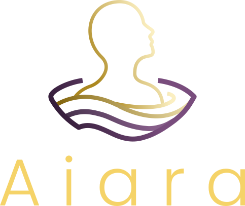

Você pode estar ignorando parte de quem você é... e seus sonhos sabem disso.
O Aiara ajuda você a registrar, acompanhar e compreender seus sonhos ao longo do tempo com base na psicologia junguiana.
Uma ferramenta de apoio terapêutico para aprofundar seu processo de autoconhecimento.

Seu sonho não quer ser interpretado. Ele quer ser acompanhado ao longo do tempo.
A maioria das pessoas tenta entender sonhos como eventos isolados. Um sonho estranho aparece, ela tenta encontrar um significado… e no dia seguinte, esquece.
Ou procura respostas genéricas na Internet:
“O que significa sonhar com cobra?”
Mas, na prática clínica, isso quase nunca funciona. Porque o sonho não é uma mensagem pronta. Ele faz parte de um processo.
Na psicologia junguiana, o sentido de um sonho depende de quem você é, do momento que está vivendo e da relação com outros sonhos.
Um sonho sozinho diz pouco.
Mas quando você começa a registrar e observar ao longo do tempo… padrões começam a surgir.
E o que antes parecia sem sentido
começa a formar uma bela narrativa sobre partes suas que você desconhecia.
Sem um registro contínuo e organizado, essa conexão se perde...
Os sonhos vêm…
e vão embora.
E com eles, uma parte importante da sua experiência também se dissolve.
Foi por isso que o Aiara foi criado
Não para interpretar sonhos de forma genérica,
mas para ajudar você a acompanhar esse processo ao longo do tempo.
Afinal, você não quer apenas entender sonhos.
Você quer uma ferramenta prática para entender a si mesma ou si mesmo.
Contexto pessoal
O Aiara entende seu perfil, contexto, sonhos anteriores e o que é importante no seu momento de vida.
Diário de sonhos
Registre seus sonhos facilmente e acompanhe sua evolução ao longo do tempo através de análises profundas.
IA treinada com rigor
Baseada na teoria de Carl Gustav Jung. Uma das ciências psicológicas mais amplas para a integração do inconsciente.
O que muda quando você começa a acompanhar seus sonhos
1. Você começa a perceber padrões que antes passavam despercebidos.
2. Seus sonhos deixam de ser fragmentos isolados e começam a formar uma narrativa de sentido para sua vida.
3. Você se conecta com aspectos ignorados da sua própria personalidade.
4. Ganha mais clareza sobre conflitos internos e potenciais adormecidos.
5. Desenvolve uma relação mais consciente com o seu mundo interior.
Um apoio ao seu processo — não um substituto
O Aiara não substitui a psicoterapia.
Ele funciona como uma ferramenta de apoio ao autoconhecimento, ajudando você a manter um contato contínuo e mais íntimo com seu mundo interior.
Pode, inclusive, complementar sua terapia, servindo como material de reflexão para suas sessões com um profissional da psicologia.
Criado com base clínica e rigor técnico
Desenvolvido por um profissional que integra a experiência de ex-engenheiro do Google à escuta clínica como psicólogo junguiano.
Profundidade, responsabilidade e privacidade.
Seus sonhos pertencem apenas a você
Por isso, o Aiara foi construído com foco total em privacidade.
Seus dados são criptografados e não são acessados por terceiros.
Comece a acompanhar seus sonhos
Experimente gratuitamente e observe o que começa a surgir quando você mantém um contato mais contínuo com sua experiência interna.
Perguntas frequentes
1. O app substitui terapia?
Não. Ele é uma ferramenta de apoio ao autoconhecimento.
2. Preciso entender de psicologia?
Não. O app foi feito para qualquer pessoa interessada em compreender melhor seus sonhos e a si mesma.
3. E se eu não lembrar dos sonhos?
A memória onírica pode ser desenvolvida, o simples ato de registrar e pensar sobre o assunto já fortalece essa capacidade.
Seus sonhos não acontecem por acaso.
Eles são uma forma de expressão da sua experiência.
Quanto mais você observa, mais começa a perceber conexões.
E, aos poucos, algo que antes parecia confuso começa a fazer sentido.
Comece a acompanhar.